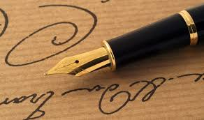
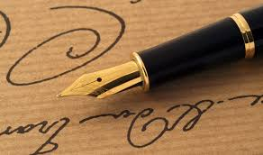

Welcome to Arabic Calligraphy Supplies
At Arabic Calligraphy Supplies, we are passionate about the art of calligraphy and dedicated to providing you with the finest tools and materials to elevate your craft. Whether you are a seasoned calligrapher or just starting your journey, our carefully curated selection of pens, inks, papers, and accessories is designed to inspire creativity and enhance your skills. We believe that every stroke tells a story, and with our high-quality supplies, you can bring your artistic visions to life. From traditional calligraphy pens to specialty inks and exquisite papers, we source our products directly from the heart of the Middle East, ensuring authenticity and excellence in every item. Join us in celebrating the beauty of Arabic and Islamic calligraphy. Explore our collection and discover the perfect tools to express your unique style and passion for this timeless art form. Let your creativity flow with Arabic Calligraphy Supplies!
In addition to pens, inks, papers, and accessories, we also offer complete calligraphy sets, which provide everything you need to get started with Arabic calligraphy.
Basic Calligraphy Set
 

specialized writing instruments designed to create beautiful, artistic lettering. They feature durable nibs that allow for consistent strokes, making them ideal for various styles of calligraphy. Whether you're a beginner or an experienced artist, using a calligraphy pen can enhance your writing projects and add a personal touch to your creations. Here are some key points about calligraphy pens:
Types of Calligraphy Pens:
Dip Pens:
These require dipping into ink and are often used for traditional scripts like Copperplate. They offer flexibility in line thickness based on pressure applied.
Fountain Pens:
These have a built-in ink reservoir and are easier to use, but they typically lack the flexibility needed for traditional calligraphy styles.
Brush Pens:
These combine the flexibility of a brush with the convenience of a pen, allowing for expressive strokes and varying line widths.
Benefits of Using Calligraphy Pens:
Artistic Expression: Calligraphy pens allow for intricate designs and beautiful lettering, making them perfect for invitations, signage, and personal projects. Precision: The nibs provide better control over line thickness, enabling the creation of detailed and elegant scripts. Variety: Available in different sizes, shapes, and colors, calligraphy pens cater to various styles and preferences.
Tips for Using Calligraphy Pens : Choose the Right Pen: Select a pen that feels comfortable in your hand and suits your writing style. Practice
Consistent practice helps improve your skills and develop a unique style. Maintain Your Pens: Clean the nibs regularly to ensure smooth ink flow and longevity of the pen.

PAPER TYPE
Rhodia: This is a popular choice for fountain pen users, as it is smooth and doesn't feather.
Clairefontaine: This paper is similar to Rhodia, but it's more affordable.
Tomoe River: This paper is known for its incredible ink absorption, making it a favorite for wet ink calligraphy. It's also known for its smooth surface and high-quality feel.
Strathmore: Strathmore offers a variety of papers, including smooth Bristol board and textured papers that are ideal for creating a variety of effects.
Canson: Canson is another brand that offers a wide range of paper weights and finishes. They have a good selection of sketchbooks and pads.
Fabriano: Fabriano is known for its high-quality papers, including watercolor and sketch papers. Their papers are a good choice for those who want a heavy, textured paper.
Paper Weight:
100gsm: This is a good weight for everyday use.
120gsm: This is a good weight for heavier inks.
140gsm: This is a good weight for mixed media work.
160gsm: This is a good weight for very wet inks.
Paper Finish:
Smooth: This finish is best for fountain pen users who want a smooth writing experience.
Textured: This finish can be used to add texture to your calligraphy.
Cold-pressed: This finish has a slight texture, but it's not as pronounced as hot-pressed.
Hot-pressed: This finish is smooth and even.
Tips for Choosing the Right Paper:
Consider your ink type.
Consider your preferred writing style.
Try out different papers to find what works best for you.